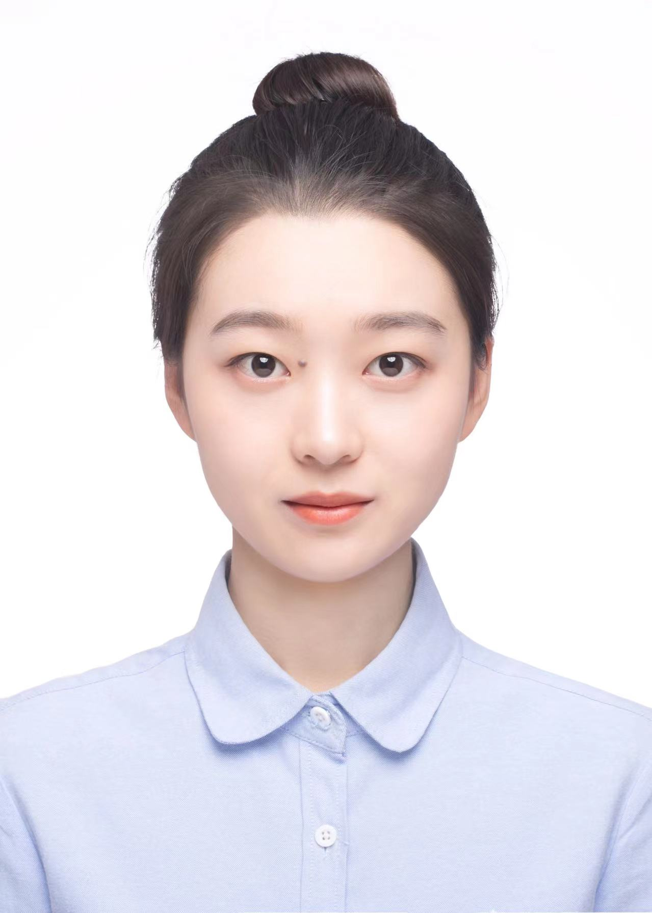
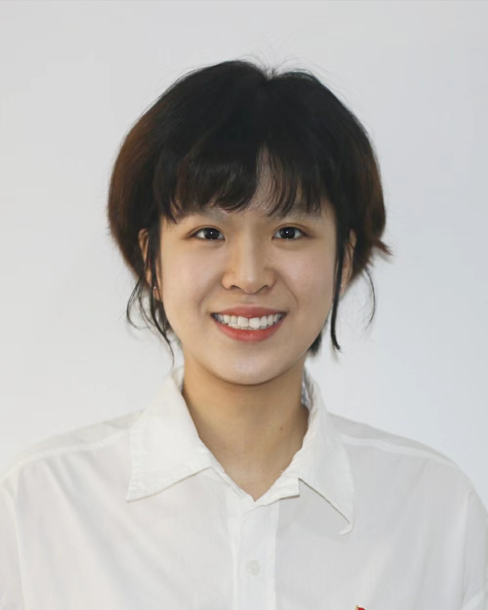

_Logo.png) FunH-Intelligent
Renewable
& Sustainable
Technology(FIRST)
FunH-Intelligent
Renewable
& Sustainable
Technology(FIRST)
-Yuekuan ZHOU's Group
Home > People
| Principle Investigator | |
 |
Dr.Yuekuan
ZHOU Assistant Professor Sustainable Energy and Environment Thrust, Function Hub, Hong Kong University of Science and Technology (Guangzhou) Prof. Zhou obtained his PhD degree in 2021 from Hong Kong Polytechnic University (HK PolyU), a Master's degree from Hunan University in 2017, and a Bachelor's from PLA University of Science and Technology in 2014. Prof. Zhou conducted his PhD attachment program in 2019 at Eindhoven University of Technology, Netherlands, under the supervision of Prof. Jan L.M. Hensen. He joined in Hong Kong University of Science and Technology in 2021. He was awarded the Best Paper Award in CUE2020: Applied Energy Symposium: Low carbon cities and urban energy systems, organized by Applied Energy journal. He has 3 highly cited papers (ESI 1%). He won the award of Outstanding PhD candidate at the international conference on Energy and Built Environment' in 2021. Dr. Zhou is invited to serve as a guest for several SCI journals. Prof. Zhou was also invited to contribute chapters in 7 books (publishers: Elsevier, Springer, and so on). He is an editorial board member of several international journals, like Energy Nexus (Elsevier), Journal of Architectural Environment & Structural Engineering Research, and Journal of Modern Green Energy. |
|
|
| Group Members | |||
|
SONG Aoye PhD student (2022.Feb-) M.S., Peking University Shenzhen Graduate School B.S., Peking University |
ZHENG Xinyao PhD student (2022.Sep-) M.S., Xi'an Jiaotong University B.S., Xi'an Jiaotong University |
||
|
DAN Zhaohui PhD student (2023.Feb-) M.S., Huazhong University of Science and Technology B.S., Wuhan Institute of Technology |
 |
Yu Xiaojun PhD student (2023.Feb-) M.S., The University of Manchester B.S., Army Engineering University of PLA |
|
PAN Deng RA (2022.Sep-) M.S., PLA University of Science and Technology B.S., PLA University of Science and Technology |
GAO Bin RA (2022.Oct-) M.S., Hunan University B.S., Hunan University of Science and Technology |
|
ZHANG Xiaohan RA (2022.Oct-) M.S., Beijing Institute of Technology B.S., Beijing Jiaotong University |
 |
ZHOU Lu Mphil student (2022.Sep-) B.S., Civil Aviation University of China |
|
LIU Kaiwen Mphil student (2022.Sep-) B.S., New York Institute of Technology |
LEI Jiachen Mphil student (2022.Sep-) B.S., Hong Kong University of Science and Technology |
|
LIU Xingrui Mphil student (2022.Sep-) M.S., Hong Kong University of Science and Technology B.S., University of Jinan |
YAU Chin Fung Mphil student (2022.Sep-) B.S., Hong Kong University of Science and Technology |
For more details, please contact Dr. Yuekuan ZHOU via yuekuanzhou@ust.hk